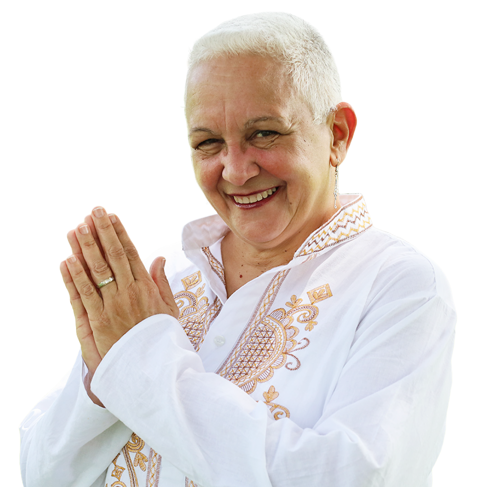

Pinto historias, raíces, símbolos y memorias que llevan la huella de mis manos.
La mujer detrás de Taller Amor
Madeleine E. Belliard
«Soy poeta y toco de oído en las demás orquestas.»
Artista multidisciplinaria, poeta, compositora, artesana y Coach Transformacional.

Mi historia
Crear ha sido mi manera de habitar el mundo
Soy Madeleine E. Belliard, creadora de Taller Amor, un espacio nacido en 1978 donde el arte, la palabra, la música y la transformación se encuentran.
Mi vida creativa se expresa a través de la poesía, la pintura, la composición musical, la artesanía y el acompañamiento humano.
Desde 1986 facilito procesos de aprendizaje y transformación. Cada obra, cada poema, cada canción y cada encuentro forman parte de un mismo propósito: crear belleza con sentido y compartir herramientas que acompañen a otras personas en su camino.
Creo profundamente que la creatividad puede sanar, revelar, recordar y abrir nuevos espacios para el alma.
Un mismo corazón creativo
Las distintas formas de mi voz
Escribo desde la vida, el amor, la identidad, la memoria y los espacios íntimos del alma.
Transformo versos y experiencias en canciones que viajan entre distintos ritmos y emociones.
Creo piezas únicas porque creo que cada persona también lo es.
Acompaño procesos de consciencia, aprendizaje, crecimiento y descubrimiento personal.
Una vida entre palabras
Reconocimiento literario
En 2004 recibí el Editor’s Choice Award, un reconocimiento que honra mi trayectoria poética y mi compromiso permanente con la palabra escrita.